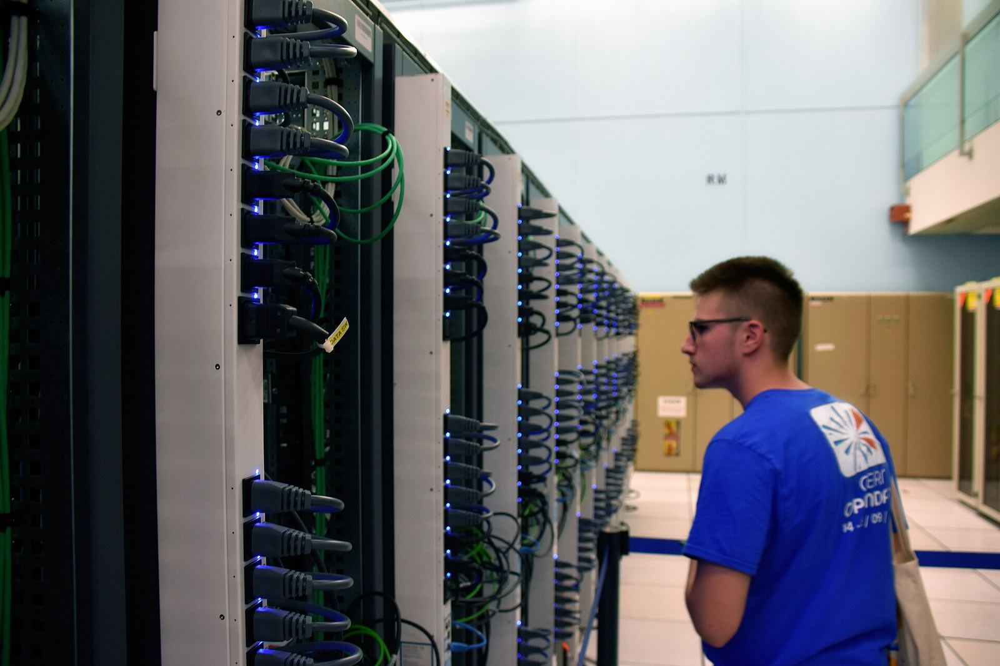

OpenCode Console 遭入侵：约 1.4% 用户外部提供商 API 密钥或暴露，用户报告未授权扣费


开源 AI 编程智能体项目 OpenCode 在 X 上通报：其托管服务 OpenCode Console 发生安全事件，公司称与「大规模蒸馏攻击」相关，影响约 1.4% 的 Console 用户——均为已链接外部模型提供商（含 Anthropic、OpenAI、Google）的子集。公司称已于次日早晨向受影响用户发邮件；未收到邮件者未被影响。联合创始人 Dax Raad 强调，事件涉及 Console，而非 OpenCode 客户端本身，本地应用中的密钥「从未到达」公司。
据 BleepingComputer 转述发给用户的通知，密钥最早可能暴露时间为 2026 年 10 月 17 日 00:30 UTC（北京时间约 08:30）；通知称目前未见其他数据暴露。The Hacker News 报道称，入侵触及公司正在退役的遗留系统，Console 工作区中保存的第三方提供商密钥「可能已暴露」。多家媒体援引用户称出现数百至逾 1700 美元的未授权 API 费用；部分 Google Cloud 项目因「与资源被劫持一致的滥用活动」被暂停。
「我们昨晚发生了与大规模蒸馏攻击相关的安全事件，影响了 1.4% 的 OpenCode Console 用户。」
OpenCode 称正在与 Anthropic、OpenAI 和 Google 协作处置。TechCrunch 报道称，Anthropic 与 Google 封锁了其认为已暴露的密钥，OpenAI 则协助恢复访问并为受攻击产生的积分退款。公司建议用户在各提供商控制台撤销并更换密钥、审查账单，并称退款安排推进中。Raad 还称攻击者在约 48 小时内持续尝试入侵，团队用 AI 做防御分析时一度因安全过滤器拒绝对恶意载荷的分析而受阻，随后获准使用 OpenAI Daybreak Blue 计划中更适合防御安全工作的模型。
OpenCode 将事件描述为蒸馏攻击；部分研究者与用户质疑该定性证据不足，认为更像凭据泄露后的滥用。截至报道时，公司未公布根因、受影响账户绝对数量或完整事后报告，并称事件仍在进行中。
来源
摘记，不是官方媒体。1.4% 比例、最早暴露时间与协作方以 OpenCode 通报及上述报道为准；蒸馏攻击定性尚存争议，根因未公开。未热链新闻社照片。